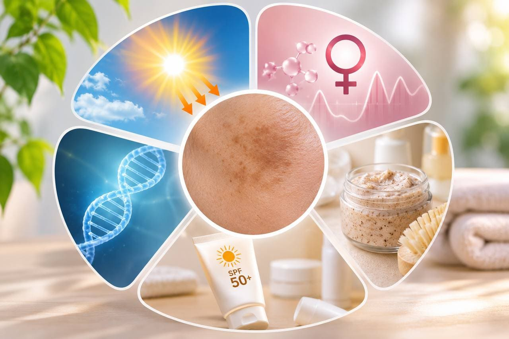

เคยไหม? รักษาฝ้าจนรอยสีน้ำตาลบนโหนกแก้มเริ่มจางลง แม้จะพยายามพึ่งครีมซอง
ทากันแดดทุกวัน หรือลองสารพัดวิธีแล้ว แต่ผ่านไปไม่กี่เดือนกลับเห็นรอยเดิมเข้มขึ้นอีก
ทั้งที่ยังดูแลผิวเหมือนเดิม จนเกิดคำถามว่า
“ฝ้ารักษาไม่หายจริงหรือ?”
ความจริงแล้ว ฝ้าสามารถดูแลให้จางลงได้ แต่ก็มีแนวโน้มที่จะกลับมาเป็นซ้ำได้เช่นกัน โดยเฉพาะเมื่อผิวยังคงได้รับแสงแดดหรือมีปัจจัยกระตุ้นอื่นร่วมด้วย สำหรับผู้หญิงวัย 40–60 ปี การเปลี่ยนแปลงของฮอร์โมนและสภาพผิวตามวัยนั้นมีส่วนเกี่ยวข้องโดยตรง
บทความนี้จะพาไปเข้าใจว่าฝ้าเกิดขึ้นได้อย่างไร ทำไมรอยบนโหนกแก้มจึงกลับมาเข้มขึ้น และควรดูแลผิวอย่างไรตามหลักวิทยาศาสตร์
ทำไมฝ้าถึงเจาะจงขึ้นตรงโหนกแก้ม?
บริเวณโหนกแก้มและหน้าแก้มเป็นส่วนที่ยื่นออกมามากที่สุดบนใบหน้า จึงเป็นจุดที่รับรังสีอัลตราไวโอเลต (UV) และแสงสีฟ้า (Blue Light) จากหน้าจอแบบเต็มๆ
นอกจากนี้ ผิวบริเวณโหนกแก้มยังมีชั้นผิวที่ค่อนข้างบางและเป็นจุดที่มีเส้นเลือดฝอยมาเลี้ยงจำนวนมาก เมื่อเซลล์สร้างเม็ดสี (Melanocyte) ในบริเวณนี้ถูกกระตุ้นบ่อยครั้ง จึงเกิดการสร้างเม็ดสีเมลานินสะสมจนกลายเป็นรอยฝ้าเข้มที่มองเห็นได้ชัดเจน
เจาะลึกสาเหตุฝ้าวัยทอง ทำไมรอยฝ้าถึงกลับมาเป็นซ้ำ?
เมื่อเข้าสู่วัยทอง ระดับฮอร์โมนเอสโตรเจน (Estrogen) ในร่างกายจะผันผวนและลดลงอย่างรวดเร็ว แม้ว่าฝ้าที่พบในวัยนี้อาจเกี่ยวข้องกับหลายปัจจัยร่วมกัน ทั้งประวัติการสัมผัสแสงแดด พันธุกรรม การใช้ฮอร์โมนบางชนิด ไปจนถึงการเปลี่ยนแปลงของผิวตามวัย แต่การเปลี่ยนแปลงเหล่านี้ก็ส่งผลกระทบต่อโครงสร้างผิวโดยตรง 3 ประการ ดังนี้:
- • เกราะป้องกันผิวอ่อนแอลง ฮอร์โมนที่ลดลงส่งผลให้ผิวสูญเสียคอลลาเจนและความชุ่มชื้นตามธรรมชาติ เกราะป้องกันผิวจึงบางลง ทำให้รังสี UV มลภาวะ และอนุมูลอิสระแทรกซึมเข้าสู่เซลล์ผิวชั้นลึกได้ง่ายกว่าปกติ
- • เม็ดสีถูกกระตุ้นให้ผลิตเกินจำเป็น: เมื่อชั้นผิวขาดความชุ่มชื้นและถูกรบกวน เซลล์ใต้ผิวหนังจะส่งสัญญาณเตือน โดยกระตุ้นให้เซลล์สร้างเม็ดสี เร่งผลิตเม็ดสีเมลานินออกมาปกป้องเซลล์ผิวมากกว่าปกติ จนเกิดเป็นรอยฝ้าเข้มสะสม
- • เส้นเลือดฝอยใต้ชั้นผิวขยายตัว: ในกลุ่มผู้หญิงวัยทอง มักพบการขยายตัวของเส้นเลือดฝอยใต้ชั้นผิวร่วมด้วย ซึ่งเส้นเลือดเหล่านี้จะคอยส่งสารอาหารไปเลี้ยงเซลล์สร้างเม็ดสีอย่างต่อเนื่อง เป็นเหตุผลสำคัญที่ทำให้ฝ้าจางลงยากและกลับมาเป็นซ้ำได้ง่าย
5 ปัจจัยที่ทำให้ฝ้าจางแล้วกลับมาเข้มขึ้นอีก

-
01
แสงแดดกระตุ้นการสร้างเม็ดสีซ้ำ
รังสี UVA และ UVB สามารถกระตุ้นการผลิตเมลานิน ทำให้ฝ้าเข้มขึ้นได้ แม้เคยรักษาจนจางลงแล้วก็ตาม
นอกจากนี้แสงที่มองเห็นได้บางช่วง โดยเฉพาะแสงพลังงานสูงจากดวงอาทิตย์ ยังมีส่วนกระตุ้นเม็ดสีในผู้ที่มีผิวบางประเภท จึงควรให้ความสำคัญกับการป้องกันแสงอย่างสม่ำเสมอ
-
02
การเปลี่ยนแปลงของฮอร์โมน
ฮอร์โมนบางชนิดอาจส่งผลต่อการสร้างเม็ดสี โดยเฉพาะในผู้ที่มีแนวโน้มเกิดฝ้าอยู่แล้ว เช่น ระหว่างตั้งครรภ์หรือการใช้ยาที่มีฮอร์โมนเป็นส่วนประกอบ
-
03
การขัดผิวหรือใช้ผลิตภัณฑ์ที่ทำให้ผิวระคายเคือง
การขัดผิวแรง ๆ หรือใช้ผลิตภัณฑ์ผลัดเซลล์ผิวหลายชนิดพร้อมกัน ทำให้เกราะป้องกันผิวพังยิ่งกว่าเดิม ซึ่งอาจทำให้ผิวแสบแดงและเกิดรอยดำตามมาหลังการอักเสบได้
-
04
หยุดดูแลผิวทันทีเมื่อฝ้าเริ่มจาง
เมื่อฝ้าดูจางลง หลายคนอาจเริ่มละเลยการทาครีมกันแดดหรือหยุดแผนดูแลที่แพทย์แนะนำ แต่ฝ้าเป็นภาวะที่มีแนวโน้มกลับมาเป็นซ้ำ การดูแลระยะยาวจึงมีความสำคัญมาก
-
05
พันธุกรรมและสภาพผิวของแต่ละคน
คนที่ได้รับแสงแดดใกล้เคียงกันอาจมีปัญหาฝ้าแตกต่างกัน เพราะผิวแต่ละคนมีความไวต่อการสร้างเม็ดสีไม่เท่ากัน
ผู้ที่มีประวัติคนในครอบครัวเป็นฝ้าอาจมีแนวโน้มเกิดฝ้ามากขึ้น ขณะที่บางคนมีความเสียหายจากแสงแดดสะสมร่วมด้วย จึงไม่แปลกที่วิธีรักษาเดียวกันอาจให้ผลแตกต่างกันในแต่ละคน
4 แนวทางฟื้นฟูผิวให้รอยฝ้าจางลงอย่างปลอดภัยและยั่งยืน
การดูแลฝ้าในวัย 40+ ไม่สามารถหวังผลแบบเร่งด่วนได้ แต่ต้องเน้นการฟื้นฟูจากโครงสร้างผิวภายในและปรับสมดุลผิว
-
01
ฟื้นฟูเกราะป้องกันผิว
เลือกใช้ผลิตภัณฑ์ที่มีส่วนผสมเติมความชุ่มชื้นและเสริมความแข็งแรงให้ผิว เช่น เซราไมด์ (Ceramides), ไฮยาลูรอน (Hyaluronic Acid) หรือไนอะซินาไมด์ (Niacinamide) เมื่อผิวแข็งแรงจะทนต่อรังสี UV ได้ดีขึ้น
-
02
ปกป้องผิวให้ครบรอบด้าน
เลือกครีมกันแดดชนิดที่ปกป้องได้ทั้ง UVA, UVB และแสงสีฟ้า โดยมีค่า SPF 50+ และ PA++++ ขึ้นไป ที่สำคัญคือควรทาในปริมาณที่เพียงพอ (ประมาณ 2 ข้อนิ้วสำหรับใบหน้า)
-
03
เติมสารต้านอนุมูลอิสระให้ร่างกาย
การรับประทานอาหารหรือสารสกัดธรรมชาติที่มีส่วนช่วยต้านอนุมูลอิสระ เช่น สารสกัดจากเมล็ดองุ่น (Grape Seed Extract),สารสกัดจากบิลเบอร์รี่ (Bilberry Extract) หรือวิตามินซีและอี จะช่วยลดการอักเสบระดับเซลล์และชะลอการกระตุ้นเม็ดสีจากภายใน
-
04
ปรับสมดุลการนอนหลับและความเครียด
เข้านอนให้เป็นเวลาเพื่อให้ร่างกายหลั่งโกรทฮอร์โมน ออกมาซ่อมแซมเซลล์ผิวที่สึกหรอในช่วงกลางคืน
ดูแลโครงสร้างผิวจากภายในเพื่อสุขภาพผิวที่แข็งแรง
ฝ้าในวัยทองไม่ใช่เรื่องสิ้นหวัง แต่ต้องอาศัยการดูแลที่ตรงจุดทั้งจากภายนอกและภายใน การปกป้องผิวจากแสงแดด การไม่ทำร้ายเกราะป้องกันผิว และการปรับพฤติกรรมการนอนหลับ ล้วนเป็นรากฐานสำคัญที่จะช่วยให้ผิวกลับมาสมดุล
นอกจากการปรับพฤติกรรมประจำวันแล้ว การเสริมสารต้านอนุมูลอิสระจากธรรมชาติที่มีประสิทธิภาพสูงก็เป็นอีกทางเลือกยอดนิยมในการช่วยดูแลเซลล์ผิวจากความเสื่อมตามวัย สำหรับผู้ที่มองหาตัวช่วยในการดูแลร่างกายอย่างครบถ้วน ผลิตภัณฑ์เสริมอาหาร S-Complex ได้รวบรวมสารสกัดธรรมชาติมาตรฐานระดับสากลที่มีฤทธิ์ต้านอนุมูลอิสระสูง ไว้ในสัดส่วนที่เหมาะสม เพื่อเป็นส่วนหนึ่งในการเติมเต็มโภชนาการ ฟื้นฟูความชุ่มชื้น และปกป้องโครงสร้างผิวให้พร้อมรับมือกับปัจจัยต่างๆ ในชีวิตประจำวันได้อย่างปลอดภัยในระยะยาว
แหล่งข้อมูลอ้างอิง
American Academy of Dermatology (AAD): Melasma: Overview and Causes.
https://www.aad.org/public/diseases/a-z/melasma-causesFiloni, A., Mariano, M., & Cameli, N. (2019): Melasma: How hormones can modulate skin pigmentation. Journal of Cosmetic Dermatology, 18(2), 458–463.
https://pubmed.ncbi.nlm.nih.gov/30656827/Passeron, T., & Picardo, M. (2018): Melasma, a photoaging disorder. Pigment Cell & Melanoma Research, 31(4), 461–465.
https://pubmed.ncbi.nlm.nih.gov/29570956/Rendon, M., & Gaviria, J. I. (2005): Review of Skin-Lightening Agents and Antioxidants in Dermatology. Dermatologic Surgery, 31(7 pt 2), 886–889.
https://pubmed.ncbi.nlm.nih.gov/16029684/